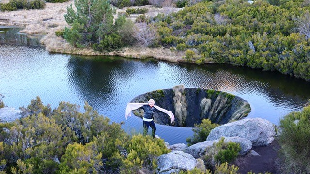

Covilha
Covilha
Em pleno o maciço superior da serra, a mais de 1500 metros de altitude, encontra-se um dos locais mais surpreendente da maior serra de Portugal. Falamos do surreal Covão dos Conchos.
Visto de certos ângulos, mais parece um portal para outra dimensão, do que realmente é, que é um túnel com cerca de 1.5km de extensão, construido na década de 50, com a finalidade de conduzir as águas da Ribeira das Neves até a Lágoa Comprida, o maior reservatorio de águas da Serra da Estrela e onde é feito aproveitamento hidroelétrico.
Originalmente era uma pequena lagoa, mas no início do século XX foi construida uma barragem com o objetivo de criar o maior reservatório de água da Serra da Estrela. A maior parte da água que chega a barragem ven através de dois túneis : o do Covão dos Conchos , que já mencionamos atrás e o do Covão do Meio.
Posso dizer que foi um dos dias mais incriveis que vivi em Portugal, estava um frio muito intenso que queimava a pele, mas, a demora no trajeto, não foi nada, perto do cenário maravilhoso que nos esperava.
 by Sônya Tôrres - Serra da Estrela